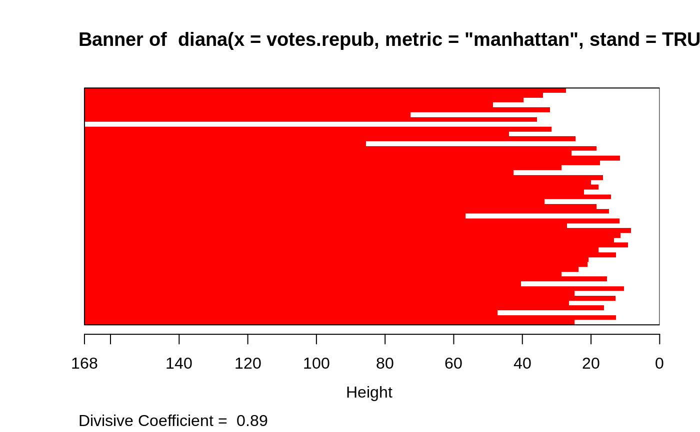
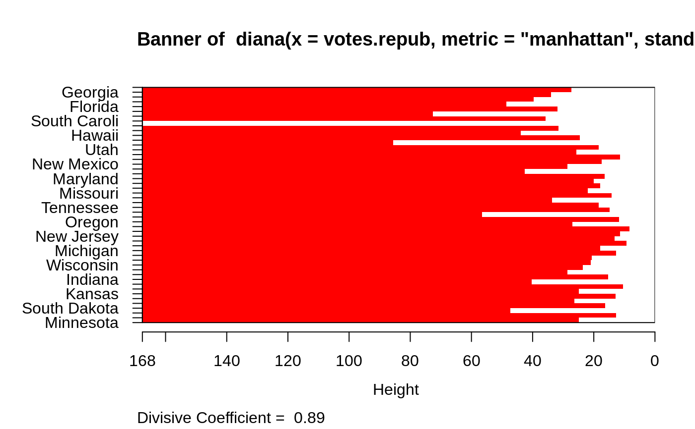

plot.diana.RdCreates plots for visualizing a diana object.
# S3 method for diana plot(x, ask = FALSE, which.plots = NULL, main = NULL, sub = paste("Divisive Coefficient = ", round(x$dc, digits = 2)), adj = 0, nmax.lab = 35, max.strlen = 5, xax.pretty = TRUE, ...)
| x | an object of class |
|---|---|
| ask | logical; if true and |
| which.plots | integer vector or NULL (default), the latter
producing both plots. Otherwise, |
| main, sub | main and sub title for the plot, each with a convenient
default. See documentation for these arguments in
|
| adj | for label adjustment in |
| nmax.lab | integer indicating the number of labels which is considered too large for single-name labelling the banner plot. |
| max.strlen | positive integer giving the length to which strings are truncated in banner plot labeling. |
| xax.pretty | logical or integer indicating if
|
| ... | graphical parameters (see |
An appropriate plot is produced on the current graphics device. This can
be one or both of the following choices:
Banner
Clustering tree
When ask = TRUE, rather than producing each plot sequentially,
plot.diana displays a menu listing all the plots that can be produced.
If the menu is not desired but a pause between plots is still wanted
one must set par(ask= TRUE) before invoking the plot command.
The banner displays the hierarchy of clusters, and is equivalent to a tree.
See Rousseeuw (1986) or chapter 6 of Kaufman and Rousseeuw (1990).
The banner plots the diameter of each cluster being splitted.
The observations are listed in the order found by the diana
algorithm, and the numbers in the height vector are represented
as bars between the observations.
The leaves of the clustering tree are the original observations. A branch splits up at the diameter of the cluster being splitted.
In the banner plot,
observation labels are only printed when the number of observations is
limited less than nmax.lab (35, by default), for readability.
Moreover, observation labels are truncated to maximally
max.strlen (5) characters.
see those in plot.agnes.
#> #> diana> data(votes.repub) #> #> diana> dv <- diana(votes.repub, metric = "manhattan", stand = TRUE) #> #> diana> print(dv) #> Merge: #> [,1] [,2] #> [1,] -7 -32 #> [2,] -13 -35 #> [3,] -12 -50 #> [4,] 1 -30 #> [5,] -26 -28 #> [6,] -5 -37 #> [7,] -22 -38 #> [8,] -21 -39 #> [9,] -16 -27 #> [10,] 4 2 #> [11,] -25 -48 #> [12,] -42 -46 #> [13,] -6 -14 #> [14,] -34 -41 #> [15,] -8 -20 #> [16,] 5 -31 #> [17,] 10 7 #> [18,] -17 -47 #> [19,] -3 -44 #> [20,] -33 12 #> [21,] 15 18 #> [22,] 17 -29 #> [23,] 22 -49 #> [24,] 21 11 #> [25,] 23 -15 #> [26,] -11 -19 #> [27,] 3 9 #> [28,] 8 -23 #> [29,] 19 16 #> [30,] 27 14 #> [31,] 6 25 #> [32,] -1 -10 #> [33,] 31 13 #> [34,] 29 -36 #> [35,] -2 -45 #> [36,] -9 -43 #> [37,] 24 20 #> [38,] 32 -4 #> [39,] -24 -40 #> [40,] 38 -18 #> [41,] 33 30 #> [42,] 34 37 #> [43,] 35 26 #> [44,] 41 28 #> [45,] 40 36 #> [46,] 42 44 #> [47,] 45 39 #> [48,] 43 46 #> [49,] 47 48 #> Order of objects: #> [1] Alabama Georgia Arkansas Louisiana Florida #> [6] Texas Mississippi South Carolina Alaska Vermont #> [11] Hawaii Maine Arizona Utah Montana #> [16] Nevada New Mexico Oklahoma Delaware Maryland #> [21] Kentucky Washington Missouri West Virginia North Carolina #> [26] Tennessee Virginia California Oregon Connecticut #> [31] New York New Jersey Illinois Ohio Michigan #> [36] Pennsylvania New Hampshire Wisconsin Iowa Colorado #> [41] Indiana Idaho Wyoming Kansas Nebraska #> [46] North Dakota South Dakota Massachusetts Rhode Island Minnesota #> Height: #> [1] 27.363453 33.969252 39.658259 48.534276 31.899654 72.598496 #> [7] 35.691518 167.580197 31.582223 43.846009 24.487963 85.552482 #> [13] 18.393392 25.676314 11.493967 17.455521 28.625502 42.544800 #> [19] 16.485096 20.044499 17.875161 21.983729 14.218077 33.610713 #> [25] 18.397326 14.757619 56.556754 11.701321 27.058874 8.382005 #> [31] 11.368197 13.252375 9.230040 17.834836 12.708189 20.667139 #> [37] 21.039972 23.665856 28.605405 15.317027 40.339045 10.462936 #> [43] 24.835249 12.804188 26.362915 16.251922 47.257725 12.791603 #> [49] 24.872061 #> Divisive coefficient: #> [1] 0.8869182 #> #> Available components: #> [1] "order" "height" "dc" "merge" "diss" "call" #> [7] "order.lab" "data" #> #> diana> plot(dv)#> #> diana> ## Cut into 2 groups: #> diana> dv2 <- cutree(as.hclust(dv), k = 2) #> #> diana> table(dv2) # 8 and 42 group members #> dv2 #> 1 2 #> 8 42 #> #> diana> rownames(votes.repub)[dv2 == 1] #> [1] "Alabama" "Arkansas" "Florida" "Georgia" #> [5] "Louisiana" "Mississippi" "South Carolina" "Texas" #> #> diana> ## For two groups, does the metric matter ? #> diana> dv0 <- diana(votes.repub, stand = TRUE) # default: Euclidean #> #> diana> dv.2 <- cutree(as.hclust(dv0), k = 2) #> #> diana> table(dv2 == dv.2)## identical group assignments #> #> TRUE #> 50 #> #> diana> str(as.dendrogram(dv0)) # {via as.dendrogram.twins() method} #> --[dendrogram w/ 2 branches and 50 members at h = 31.1] #> |--[dendrogram w/ 2 branches and 8 members at h = 15.3] #> | |--[dendrogram w/ 2 branches and 6 members at h = 10.5] #> | | |--[dendrogram w/ 2 branches and 3 members at h = 8.46] #> | | | |--[dendrogram w/ 2 branches and 2 members at h = 6.28] #> | | | | |--leaf "Alabama" #> | | | | `--leaf "Georgia" #> | | | `--leaf "Louisiana" #> | | `--[dendrogram w/ 2 branches and 3 members at h = 7.68] #> | | |--[dendrogram w/ 2 branches and 2 members at h = 7.1] #> | | | |--leaf "Arkansas" #> | | | `--leaf "Florida" #> | | `--leaf "Texas" #> | `--[dendrogram w/ 2 branches and 2 members at h = 9.55] #> | |--leaf "Mississippi" #> | `--leaf "South Carolina" #> `--[dendrogram w/ 2 branches and 42 members at h = 17] #> |--[dendrogram w/ 2 branches and 4 members at h = 9.43] #> | |--[dendrogram w/ 2 branches and 2 members at h = 6.45] #> | | |--leaf "Alaska" #> | | `--leaf "Vermont" #> | `--[dendrogram w/ 2 branches and 2 members at h = 5.23] #> | |--leaf "Hawaii" #> | `--leaf "Maine" #> `--[dendrogram w/ 2 branches and 38 members at h = 12.5] #> |--[dendrogram w/ 2 branches and 9 members at h = 7.98] #> | |--[dendrogram w/ 2 branches and 7 members at h = 6.12] #> | | |--[dendrogram w/ 2 branches and 4 members at h = 5.03] #> | | | |--leaf "Arizona" #> | | | `--[dendrogram w/ 2 branches and 3 members at h = 4.11] #> | | | |--leaf "Colorado" #> | | | `--[dendrogram w/ 2 branches and 2 members at h = 3.11] #> | | | |--leaf "Montana" #> | | | `--leaf "Nevada" #> | | `--[dendrogram w/ 2 branches and 3 members at h = 3.77] #> | | |--[dendrogram w/ 2 branches and 2 members at h = 2.28] #> | | | |--leaf "Idaho" #> | | | `--leaf "Wyoming" #> | | `--leaf "Utah" #> | `--[dendrogram w/ 2 branches and 2 members at h = 3.06] #> | |--leaf "Kansas" #> | `--leaf "Nebraska" #> `--[dendrogram w/ 2 branches and 29 members at h = 12.5] #> |--[dendrogram w/ 2 branches and 3 members at h = 5.1] #> | |--[dendrogram w/ 2 branches and 2 members at h = 4.49] #> | | |--leaf "Kentucky" #> | | `--leaf "Virginia" #> | `--leaf "Oklahoma" #> `--[dendrogram w/ 2 branches and 26 members at h = 10.4] #> |--[dendrogram w/ 2 branches and 18 members at h = 7.26] #> | |--[dendrogram w/ 2 branches and 14 members at h = 6.79] #> | | |--[dendrogram w/ 2 branches and 3 members at h = 3.72] #> | | | |--leaf "California" #> | | | `--[dendrogram w/ 2 branches and 2 members at h = 2.64] #> | | | |--leaf "Oregon" #> | | | `--leaf "Washington" #> | | `--[dendrogram w/ 2 branches and 11 members at h = 5.82] #> | | |--[dendrogram w/ 2 branches and 9 members at h = 4.93] #> | | | |--[dendrogram w/ 2 branches and 7 members at h = 4.13] #> | | | | |--[dendrogram w/ 2 branches and 2 members at h = 2.97] #> | | | | | |--leaf "Connecticut" #> | | | | | `--leaf "New Hampshire" #> | | | | `--[dendrogram w/ 2 branches and 5 members at h = 3.8] #> | | | | |--[dendrogram w/ 2 branches and 3 members at h = 2.61] #> | | | | | |--[dendrogram w/ 2 branches and 2 members at h = 2.28] #> | | | | | | |--leaf "Illinois" #> | | | | | | `--leaf "New Jersey" #> | | | | | `--leaf "New York" #> | | | | `--[dendrogram w/ 2 branches and 2 members at h = 2.53] #> | | | | |--leaf "Indiana" #> | | | | `--leaf "Ohio" #> | | | `--[dendrogram w/ 2 branches and 2 members at h = 2.77] #> | | | |--leaf "Michigan" #> | | | `--leaf "Pennsylvania" #> | | `--[dendrogram w/ 2 branches and 2 members at h = 3.61] #> | | |--leaf "Delaware" #> | | `--leaf "New Mexico" #> | `--[dendrogram w/ 2 branches and 4 members at h = 4.37] #> | |--[dendrogram w/ 2 branches and 3 members at h = 3.92] #> | | |--[dendrogram w/ 2 branches and 2 members at h = 2.73] #> | | | |--leaf "Iowa" #> | | | `--leaf "South Dakota" #> | | `--leaf "North Dakota" #> | `--leaf "Wisconsin" #> `--[dendrogram w/ 2 branches and 8 members at h = 10.4] #> |--[dendrogram w/ 2 branches and 5 members at h = 6.21] #> | |--leaf "Maryland" #> | `--[dendrogram w/ 2 branches and 4 members at h = 5.71] #> | |--[dendrogram w/ 2 branches and 2 members at h = 3.17] #> | | |--leaf "Missouri" #> | | `--leaf "West Virginia" #> | `--[dendrogram w/ 2 branches and 2 members at h = 3.7] #> | |--leaf "North Carolina" #> | `--leaf "Tennessee" #> `--[dendrogram w/ 2 branches and 3 members at h = 5.53] #> |--[dendrogram w/ 2 branches and 2 members at h = 3.21] #> | |--leaf "Massachusetts" #> | `--leaf "Rhode Island" #> `--leaf "Minnesota" #> #> diana> data(agriculture) #> #> diana> ## Plot similar to Figure 8 in ref #> diana> ## Not run: plot(diana(agriculture), ask = TRUE) #> diana> ## Don't show: #> diana> plot(diana(agriculture))#> #> diana> ## End(Don't show) #> diana> #> diana> #> diana>## wider labels : op <- par(mar = par("mar") + c(0, 2, 0,0)) plot(dv, which = 1, nmax.lab = 100, max.strlen = 12)par(op)